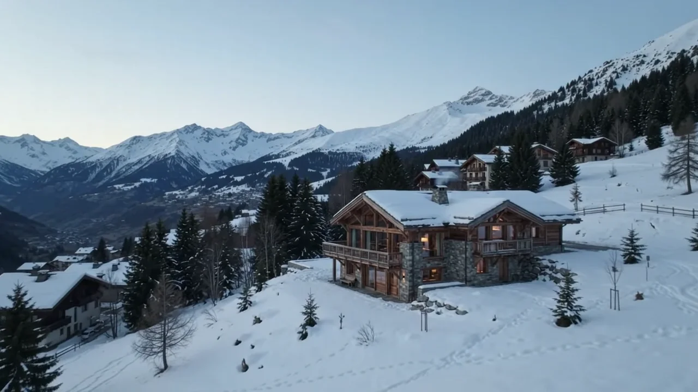
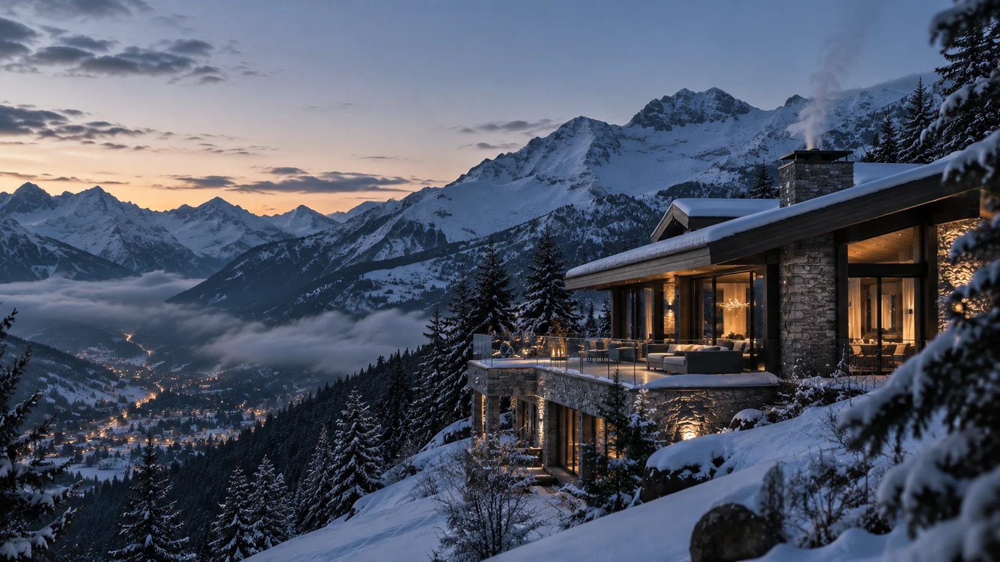
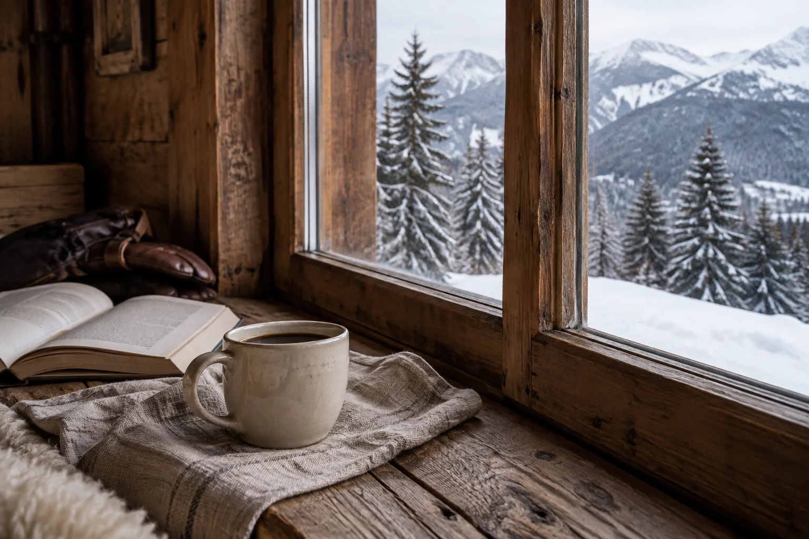
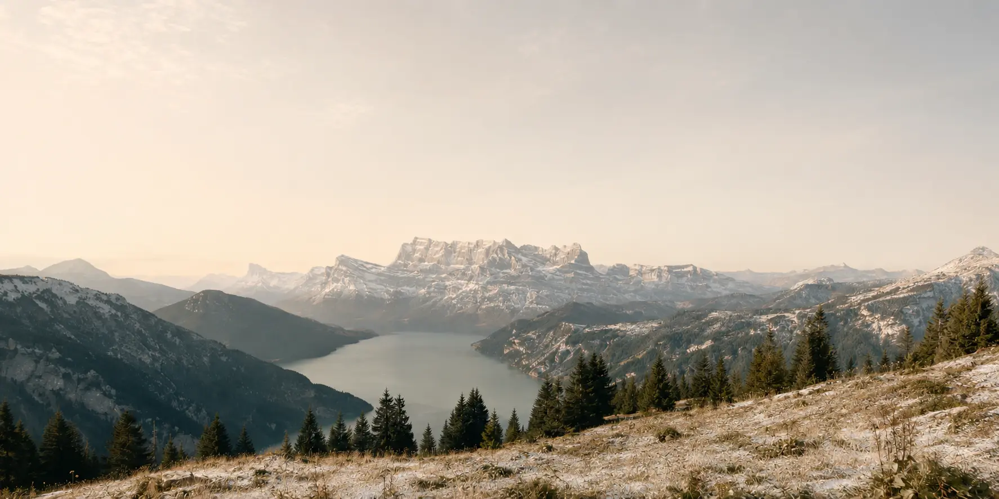

01 / Judgement
The right
place.
A beautiful property is only the beginning.
The question is whether it is right for you.

A private Alpine travel office
Exceptional Alpine travel,
personally considered.
An entire world. One considered answer.
A different point of view
We search widely, know personally
and recommend selectively.
Fewer options. A clearer answer.

01 / Judgement
A beautiful property is only the beginning.
The question is whether it is right for you.
02 / Perspective
The same village can feel entirely different a week later.
Snow, sunshine, school holidays, the rhythm of a resort. Knowing when matters as much as knowing where.
Place is only half the story.
03 / Understanding
The instructor your children trust.
The room that catches the morning light.
The things you shouldn’t have to ask twice.
The Office
Independent thinking. Personal attention.A little less searching.
A lot more certainty.
We plan exceptional time in the mountains for a small number of private clients. We search widely, recommend selectively and arrange the details around the people travelling.
No catalogue. No endless shortlist. A considered recommendation, and someone personally accountable for it.
We keep the Office small so the relationship stays personal. It begins with a conversation.
Personal by design
Marcus Roberts has spent more than a decade advising private clients on travel throughout the Alps.
The Office brings that experience into a closer, more continuous relationship. Someone who knows the places, understands the people travelling and stands behind the recommendation.
A familiar name. A considered point of view.
A relationship that remembers
The room arrangement that worked. The transfer that felt too long. The instructor you would ask for again.
We carry those details forward, so your next trip begins where the last conversation left off.
The Alps, in every season
Winter may bring you here.
The mountains give you
every reason to return.
From the great linked ski areas to the quieter corners worth knowing.
Grand mountain hotels, remarkable landscapes and villages with a rhythm of their own.
A deeply personal tradition of hospitality, on and beyond the slopes.
Long lunches, dramatic mountains and a different pace of Alpine life.
Snow gives way to wildflowers.
The same care, a different season.
